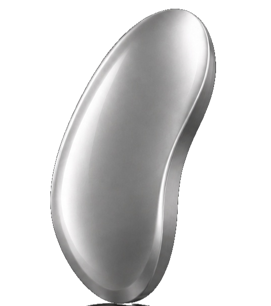
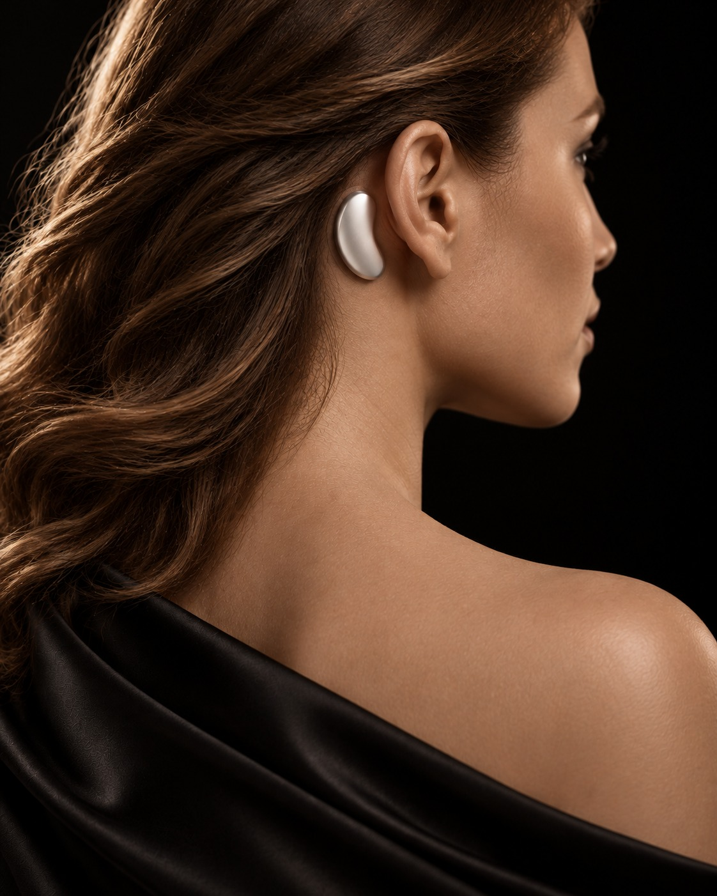
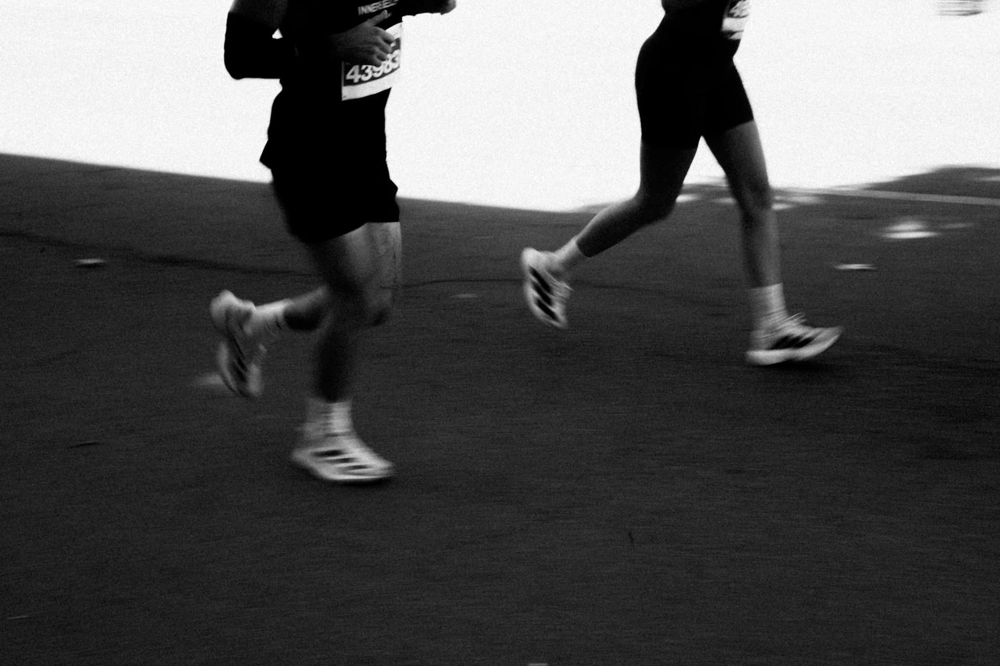

Racing mind
Replaying the day. Checking the clock.
Drift off sooner.

Sleep deeper.
Do bigger things.
For the nights your head won’t switch off, and the mornings you wake up tired anyway. So you can sleep deeper, with a small wearable behind your ear. Drug-free.
Free to join. Still in development, and you can follow along as we build it.Which one sounds like your nights?
Replaying the day. Checking the clock.
Drift off sooner.
3 AM. You and the ceiling.
Sleep through.
Eight hours. Foggy by 10 AM.
Wake up like yourself.
Sound like you? You’re not doing anything wrong. This is what Droyma is designed to fix.
Get early access Free. No payment, no spam.WHY I’M BUILDING DROYMA
For years I couldn’t shut my head off at night.
Even young, I never felt I got real deep sleep. I woke up tired and groggy, and the more I learned, the more I saw what poor sleep costs your health later on.
My friends had it too. Waking up through the night. Turning down the temperature, wearing sleep masks, playing sounds all night just to drown out their heads. Lots of workarounds. Nothing that worked on the sleep itself.
So I’m building the thing we all needed. And I’ll show the waitlist every step: prototypes, tests and results.
Daniel OpataFounder, Droyma
HOW IT WORKS
In deep sleep, your brain moves in slow waves, up and down like a swing. Push a swing at just the right moment and it goes higher. Droyma plays a tiny, soft sound at just the right moment of each wave, so your sleep goes deeper.
You put it on and go to sleep. It does the rest.

Your sleep happens in your brain, not your wrist. Soft sensors behind your ear (EEG) find the moment you’re ready to sink deeper.
You’re in deep sleep. A very soft sound reaches you through bone conduction, timed to each wave. Silent to the room. If you stir, it goes quiet.
Your brain isn’t like anyone else’s. Night by night, Droyma gets to know yours: when to play, and how softly.
A NIGHT WITH DROYMA
10:30 PM
You stop replaying the day. Droyma is designed to help you settle, so sleep comes sooner.
11:00 PM
A sound so soft you sleep right through it. You go further down.
12:15 AM
Droyma goes quiet and lets you.
3:10 AM
You spend fewer nights with the ceiling. If you do stir, Droyma waits, then picks up where you left off.
6:45 AM
The alarm goes off, and for once you’re ready for it. Actually rested.
Done with bad nights?
Get early accessWHAT CHANGES FOR YOU
You spend less time staring at the clock, less time replaying the day. Sleep comes sooner.
Your night stops breaking apart. Built to keep deep sleep deeper and steadier, so your body gets the time it needs to recover.
You hold on to what you learned today. In a lab study of adults 60 to 84, overnight memory gains were about three times larger with timed sound.
You take nothing, so nothing wears off. Patience for the kids, a clear head at 9 AM. Now go chase your dreams.

You don’t take a pill. You don’t lie awake worrying about a score. You just go to sleep.
Based on publicly available product information, October 2026. Oura, WHOOP and Eight Sleep are trademarks of their respective owners and are not affiliated with Droyma. Not medical advice; talk to a doctor before starting or stopping any sleep aid.
Done with bad nights?
Get early accessTHE SCIENCE
You’ve tried enough things that didn’t work. Here’s the evidence. In sleep labs, soft sound timed to the brain has helped people fall asleep faster, sleep deeper and remember more. Droyma is designed to bring it into your own bed.
Soft sound, timed to the brain's pre-sleep rhythm.
Soft clicks, timed to the rise of each deep-sleep wave.
Pulses of soft pink noise, timed to each deep-sleep wave.
Small lab studies of 11 to 21 people each. Findings across the wider research vary, and larger studies are still needed; in the two deep-sleep studies, deep-sleep waves grew stronger during the sound. Results from published sleep studies, not Droyma measurements or guaranteed outcomes. The 2024 study is a preprint, not yet peer reviewed.
Done with bad nights?
Get early accessIn deep sleep, your brain moves in slow waves. Droyma senses those waves from behind your ear. At the right moment in each one, it plays a very soft sound through bone conduction, which helps the wave run deeper. Night by night, it learns your timing. Sleep labs have studied this method, called acoustic stimulation, for over a decade.
It can’t add hours or reset your body clock. It’s designed to make the hours you get count: deeper sleep, fewer wake-ups. Home, hotel or a new time zone, it goes where you go.
The sound travels through bone rather than the air. It’s designed to be barely audible to you, soft enough to sleep through, and not to fill the room, so your partner sleeps on.
The method is. Timed sound during sleep has been studied in sleep labs for over a decade, with the results shown above. Droyma itself is still in development, so we won’t claim results until we’ve tested it. We’ll share our own test results with the waitlist, whatever they show.
Droyma is in development. First units go to the waitlist. You’ll also get prototype updates and hear launch pricing before anyone else. Joining is free: no payment, no spam.
Your ring can tell you how a night went. It can’t change it. Droyma is built to work on the night while it’s happening, with soft, timed sound that deepens your sleep, drug-free.
Droyma is designed to sit behind your ear all night, with nothing over your head or face. Comfort testing is part of development before launch.
Droyma uses very soft sound at low intensity. It’s still in development and will be safety-tested before it ships. If you’re always tired, snore heavily or stop breathing at night, talk to a doctor first. Droyma is a wellness product for better sleep, not a treatment for insomnia or any sleep disorder.
Your sleep signals are used to time Droyma’s sound. Before anything ships, we’ll publish exactly what’s stored, where, and how to delete it.
No. Trackers tell you how you slept. Droyma is designed to change how you sleep. There’s no new score to chase. You’ll know it’s working the way that matters: by how you feel the next day.
It’s designed to stay very soft: gentle as you drift off, then timed to deep sleep, when you’re hardest to wake. And it goes quiet if you start to stir.
Talk to your doctor before changing anything you take. Melatonin is a workaround, not a fix. It comes with side effects like next-day drowsiness, headaches, dizziness and vivid dreams (NIH). Droyma is drug-free, but it isn’t a replacement for treatment.
WHY SLEEP MATTERS
Deep sleep is when your brain moves the day into long-term memory.
Diekelmann & Born, Nature Reviews Neuroscience, 2010more space opens between brain cells in sleep, so fluid can flush out waste like beta-amyloid.
Xie et al., Science, 2013 (study in mice)better shooting, and faster sprints, when Stanford basketball players slept more.
Mah et al., Sleep, 2011Two weeks of 6-hour nights dulled focus as much as up to two nights with no sleep at all. Most people didn’t notice.
Van Dongen et al., Sleep, 2003Sleep isn’t time off.
It’s when your brain does its most important work.
Show up to tomorrow at your best.
Done with bad nights?
Get early access Free to join. No payment, no spam.YOU’RE NOT THE ONLY ONE
Trouble sleeping?
Tell us what your nights are like, and we’ll show you what Droyma is designed to change for you.
WE HEAR YOU
What Droyma is designed to do for you
You’re on the list.
We’ll email you prototype updates as we build, and you’ll hear first when Droyma is ready.